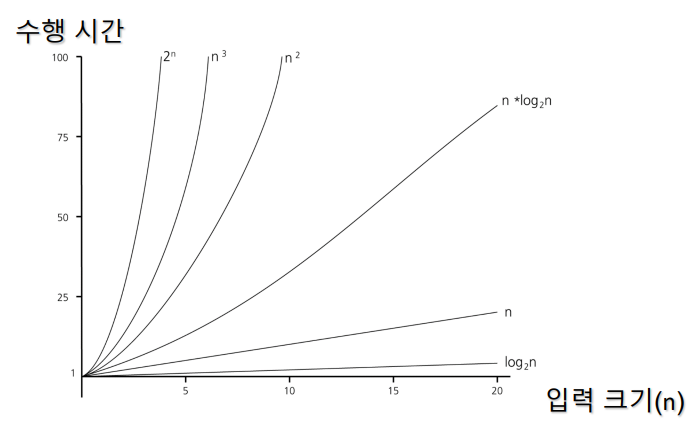
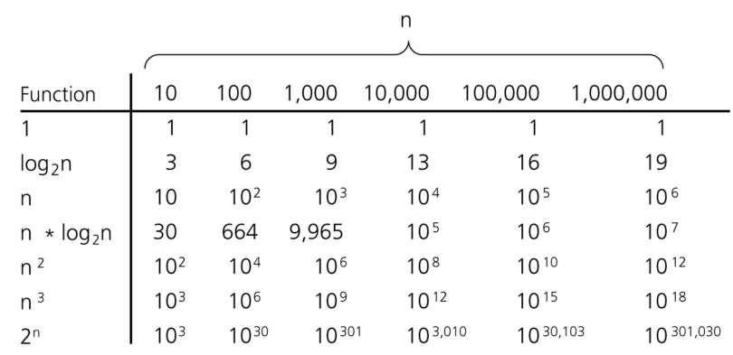

알고리즘(Algorithm)¶
1절. 정의¶
알고리즘(Algorithm)¶
- 문제 해결, 연산 수행을 위해 필요한 일련의 단계적 절차나 규칙
- 알고리즘이 해결하는 문제 : 입력과 출력 명시
- 입력 -> 알고리즘 -> 출력
| 요소 | 특성 |
|---|---|
| 입력 | 유한성 |
| 출력 | 명확성 |
| 효율성 |
2절. 효율성¶
효율성(Efficiency)¶
- 입력 크기가 커질수록 중요성 증가
- 효율적인(efficient) 알고리즘 작성 시 고려 요소
- 수행 시간
- 메모리
- 알고리즘의 수행시간은 입력 크기를 기반으로 특정 비율로 소요
-
N : 입력 크기
-
수행 시간 예시
| 수행 시간 | 기호 |
|---|---|
| 1(상수) | \(O(1)\) |
| \(N\) | \(O(N)\) |
| \(N^2\) | \(O(N^2)\) |
| \(N^3\) | \(O(N^3)\) |
| \(log N\) | \(O(log N)\) |
| \(N log N\) | \(O(N log N)\) |
| \(2^n\) | \(O(2^N)\) |
3절. 수행시간¶
알고리즘 특정 비율 별 수행 시간¶


상수 시간 : \(O(1)\)¶
- \(n\)에 관계 없음
- 상수 시간 소요
\(n\)에 비례하는 시간 소요 : \(O(N)\)¶
- \(n\)에 비례
\(n^2\)에 비례하는 시간 소요 : \(O(N^2)\)¶
- \(n^2\)에 비례
# n * n만큼 수행
def sample3(A, n):
sum = 0
for i in range(1, n):
for j in range(1, n):
sum += (A[i] * A[j])
return sum
# 예시
print(sample3([1, 2, 3, 4, 5], 4))
# 출력
81
\(n^3\)에 비례하는 시간 소요 : \(O(N^3)\)¶
- \(n^3\) 의 값에 비례하는 시간 소요
# n * n * n만큼 수행
def sample4(A, n):
sum = 0
for i in range(1, n):
for j in range(1, n):
# k <- A[1...n]에서 임의 floor(n/2)개 중 최댓값
sum += k
return sum
Q1. sample5 함수의 수행 시간 ?¶
def sample5(A, n):
sum = 0
for i in range(1, n):
for j in range(1 + 1, n):
sum += A[i] * A[j]
return sum
- \(n^2\)에 비례하는 수행 시간
- A[i], A[j]를 가져올 경우 상수 시간 \(O(1)\) 소요
- range(1, 5) × range(2, 5)
= $(n - 1) × (n - 2) $
= \(n^2 - 3n + 2\) = \(O(n^2)\)
4절. Extra¶
이진 탐색(Binary Search)¶
- 오름차순 정렬 전제
- \(O(log n)\)에 비례
def binary_search(arr, target):
low = 0
high = len(arr) - 1
while low <= high:
mid = (low + high) // 2
if arr[mid] == target:
return mid
elif arr[mid] < target:
low = mid + 1
else:
high = mid - 1
return -1
# 어느 것도 찾지 못한 경우 -1 리턴
재귀(Recursion)¶
- 문제 안에 문제가 존재하는 경우
- ex) factorial 함수
- factorial(n) 함수는 \(O(N)\)에 비례
병합 정렬의 재귀¶
# A[p ... r]을 정렬
def mergeSort(A, p, r):
if (p < r):
q = floor((p + r)/2)
# p, r의 중간 지점 계산
mergeSort(A, p, q) # 전반부 정렬
mergeSort(A, q+1, r) # 후반부 정렬
merge(A, p, q, r) # 병합
def merge(A, p, q, r):
# 정렬된 배열 A[p ... q]와 A[q+1 ... r] 병합
# 하나의 배열 A[p ... r] 생성
재귀 정리¶
- 프로그램의 크기가 작고 간단하게 표현 가능
- stack에서 복잡한 push, pop 연산으로 많은 메모리 사용
- 속도 저하 가능성 존재
- loop 사용 추천
5절. Summary¶
알고리즘 본질¶
- 명확한 입력을 받아 모호하지 않은 단계(명확성)을 거쳐 유한한 시간 내에 반드시 출력을 내는 효율적인 절차
- UI(화면)나 외부 의존성을 배제해 데이터 연산과 변환에만 집중하는 순수 로직
시간 복잡도¶
- 데이터의 크기(N)가 커질 때 최고 차수만 남고 상수는 제외
| 기호(Big-O) | 명칭 | 특징 | 예시 |
|---|---|---|---|
| \(O(1)\) | 상수 시간 | 데이터 크기에 상관 없는 최고 효율성 | 배열 인덱스 조회 |
| \(O(log N)\) | 로그 시간 | 데이터 크기가 증가해도 소요시간은 안정적 | 이진 탐색(Binary Search) |
| \(O(N)\) | 선형 시간 | 데이터 크기만큼 비례하게 증가 | 단일 루프문 |
| \(O(N log N)\) | 선형 로그 시간 | 효율적 정렬 알고리즘 표준 속도 | 병합 정렬(Merge Sort) |
| \(O(N^2)\) | 2차 시간 | 데이터가 많아지면 시스템 부하 발생 | 이중 중첩 루프문, 버블 정렬(Bubble Sort) |
| \(O(N^3)\) | 3차 시간 | 데이터가 조금만 많아져도 시스템 사용 불가 | 삼중 중첩 루프문 |
알고리즘 기반 코드 설계¶
중첩 루프 경계¶
- 루프 내 다른 탐색 발생 시 차수가 곱해짐
- \(O(N^2)\), \(O(N^3)\)
- 구조 개선 필요
재귀(Recursion) 사용 주의¶
- 재귀는 직관적인 코드를 가짐
- 팩토리얼, 병합 정렬
- 실무에서는 메모리(Memory) 스택 오버플로우나 속도 저하 유발 가능
- 반복문(Loop)으로 우회 추천